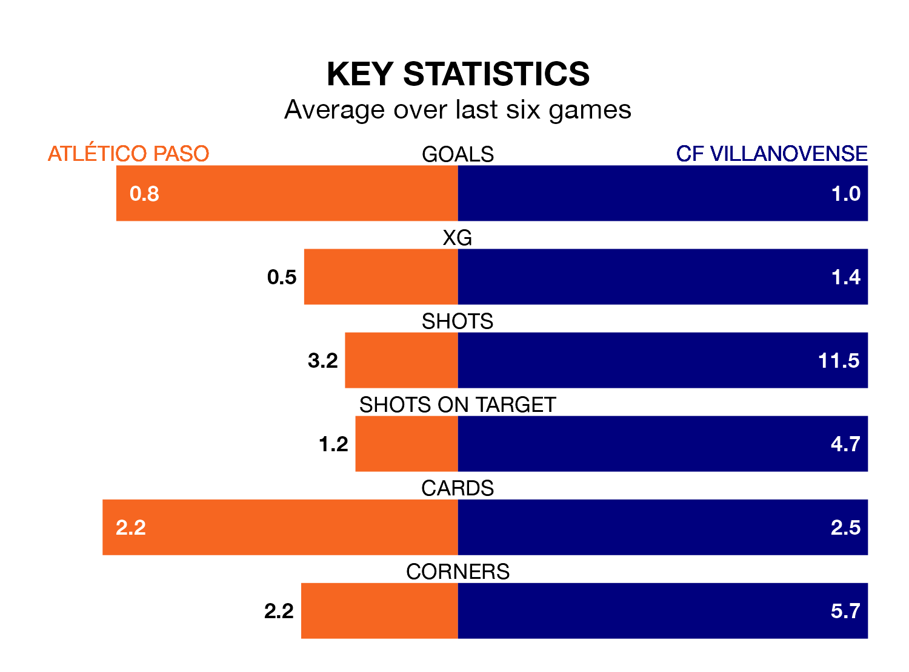

Atlético Paso host CF Villanovense on Sunday in the Segunda División RFEF Group 5.
In their last league match, on February 11, Atlético Paso drew with CDA Navalcarnero 1-1 away, with their goal scored by Juan Carlos Menudo Domínguez.
Villanovense won, 1-0 at home against Llerenense, with Victor Uzochukwu Ogumka Adighube scoring their goals.
Atlético Paso are fourth in the table after 22 games, of which they have won nine and drawn nine, earning 36 points.
Villanovense are six places behind the hosts in 10th, with eight wins and five draws putting them on 29 points.
With 17 goals in 22 games so far this season, Atlético Paso are the league's joint-second-lowest scorers with 0.8 goals per game. But they are conceding fewer than average too, letting in 10 goals at a rate of 0.5 per game.
The away team are also below average scorers, with 1.0 goal per game, compared to a league average of 1.1. They have conceded 0.9 goals per game.
In the last three years, Atlético Paso and Villanovense have played each other on three occasions. Villanovense won two of them and they drew once.
Their last meeting was on October 8, when they played out a 0-0 draw.
Atlético Paso are in reasonable form in the Segunda División RFEF Group 5, with three wins and two draws from their last six games.
With three wins and three losses over that period, Villanovense's form is slightly worse – they have taken nine points from 18, compared to the home side's 11.
Updated: 13:04 (UTC), 16/02/24